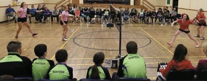
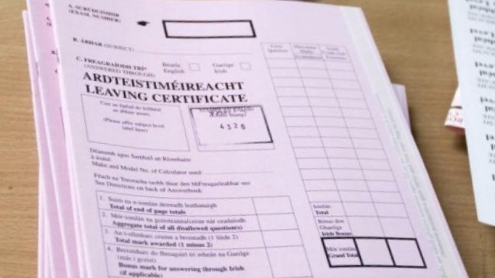

I have been a loyal and dedicated member of my local badminton club for 8 years. With the help of excellent coaches and dedicated members, we have achieved great things for the club. We have won various medals, such as 1st place in the Cork Championships and runners up in the Munster Championships.
In 2016 i was lucky enough to become a member of the Cork Ladies U18's team, competing against various county clubs, increasing my skills and technique.

I have been a loyal member of my local Youth Club since September 2010. This has allowed to participate in an Internation Youth Conference with Foroige Ireland, called "Leadership for Life"
The programme consisted of 3 modules:
• Module 1 enabled us to explore what leadership is and the type of leaders we would like to be. The module focused on core leadership skills such as communication, problem solving, self-awareness, values and action planning. The module contained 15 one-hour workshops & 15 hours of self-directed learning and reflection.
• Module 2 enabled us, as young people, to work with others to achieve a leadership goal. The module focused on how leadership can have a positive impact on society by tackling both local and global issues. Module 2 also focused on research skills, conflict resolution, critical thinking and exploring leadership styles.
• Module 3 allowed us to put into practice the learning from module 1 and 2. Young people had an opportunity to complete a self-directed 20 hour community action project of their choice plus a reflection journal and portfolio.
I enjoy writing very much. My writing topics and style tend to match my elasticity, though I enjoy the role of an essayist-poet most of all. I have written many instructional articles, though I have lately stayed away from them due to my over-exercise of that area of writing.
I enjoy poetry, and while few poets ever put bread on the table and write substantial amounts of poetry, I am not motivated by anything primarily for money and find poetry an expressive way to communicate things that prose is unable to.
I thoroughly enjoyed Leaving Cert English as it allowed me to express my artistic flair in writing, to get my creative juices flowing and express it in words.
